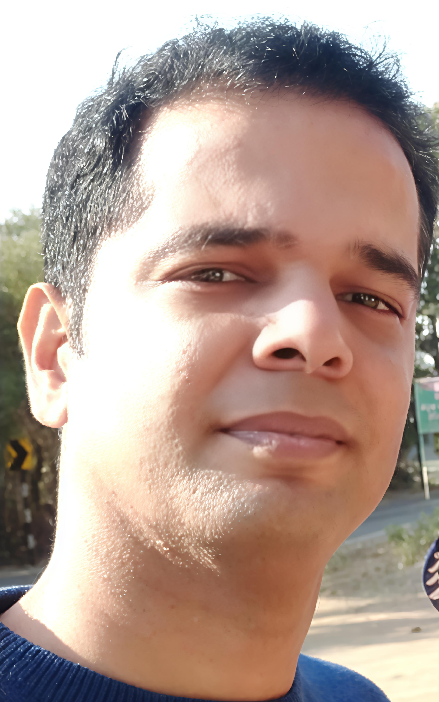
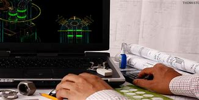

My Abstract

Summary
- Dedicated and skilled Engineer having keen interest to build different & unique projects for Development
Education
.jpg)
- High School in Science (2003-2005)
- B.E.- Instrumentation and Control (2005-2009)
Work Experience

- Worked as Assisant Engineer at Ukai Thermal Power Plant in Instrument Maintenance Dept. (2009-2015)
- Having hands-on field experience of Distrubuted Control System of whole plant.
- Carried out Preventive/Annual Shutdown maintenance of critical field Instruments as well as Control system
- Material procurement as well as material management work carried out.
- Worked as Assistant Engineer at Hydro Power Plant at Kevadia in Electrical/Instrument Maintenance Dept.(2015-2018)
- Assisted in Preventive maintenance in Hydro Generator, transformers and their auxiliaries.
- Resolved maintenance related issues in Eletro-Hydraullic control cabinet of Turbine.
- Carried Out Time Synchronization Activity between Control system & GRP protection numerical relays with newly procured GPS receiver.
- Promoted as Deputy Engineer at Ukai Thermal Power Plant (2019-Till date)
- Handled projects regarding Switching over from existing PLCs to DCS comprising work of cable scheduling to programming/Developing of project displays.
- Undergone training of Web-development in HTML-5
Skills
- A keen and skilled engineer
Area of Expertise
.jpg)
- Better Skilled in Logic Programming.
- More Creative in developing new projects
Awards/Certifications
.jpg)
- Awarded with certificate of successfully completing Programming in C Language (2006),
- Facilitated with certificate of Participation in Robo-Olympics- The Clash of Titans and The Carom-Bot in Kshitij-2008
- Certified for completing training successfully in maxDNA system(2010), PADO system(2012)
Hobbies
.jpg)
- Painting
- Book-Reading
- Sport